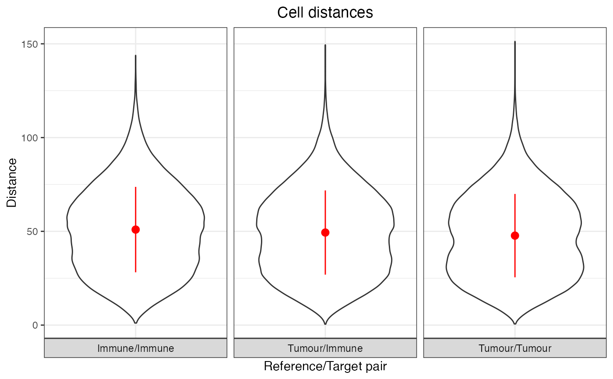

R/calculate_pairwise_distances_between_cell_types3D.R
calculate_pairwise_distances_between_cell_types3D.RdThis function calculates the pairwise distances between different cell types in a 3D SpatialExperiment object. It allows you to specify a subset of cell types to analyse and provides the option to summarise the results and plot violin plots of the pairwise distances between cell types.
calculate_pairwise_distances_between_cell_types3D(
spe,
cell_types_of_interest = NULL,
feature_colname = "Cell.Type",
show_summary = TRUE,
plot_image = TRUE
)A SpatialExperiment object containing 3D spatial information for the cells. Naming of spatial coordinates MUST be "Cell.X.Position", "Cell.Y.Position", "Cell.Z.Position" for the x-coordinate, y-coordinate and z-coordinate of each cell.
A character vector specifying the cell types of
interest. If NULL, all cell types in the feature_colname column will be
considered. Defaults to NULL.
A string specifying the name of the column in the
colData slot of the SpatialExperiment object that contains the cell
type information. Defaults to "Cell.Type".
A logical indicating whether to print a summary of the pairwise distances for each cell type pair. Defaults to TRUE.
A logical indicating whether to plot violin plots of the pairwise distances between cell type pairs. Defaults to TRUE.
A data frame containing information about the reference cell, target cell, and the distance between them for all reference and target cells and for each cell type pair.
# Get simulated SpatialExperiment object to use as an example for analysis
simulated_spe <- readRDS(system.file("extdata", "simulated_spe.rds", package = "SPIAT3D"))
pairwise_distances <- calculate_pairwise_distances_between_cell_types3D(
spe = simulated_spe,
cell_types_of_interest = c("Tumour", "Immune"),
feature_colname = "Cell.Type",
show_summary = TRUE,
plot_image = TRUE
)
#> pair mean min max median std_dev reference target
#> 1 Immune/Immune 50.93556 1.1111424 143.8472 50.37245 22.78010 Immune Immune
#> 2 Tumour/Immune 49.36338 0.5010763 149.4711 48.71339 22.44736 Tumour Immune
#> 3 Tumour/Tumour 47.71634 0.6332032 151.2968 46.80121 22.22545 Tumour Tumour
#> Plots show mean ± sd
